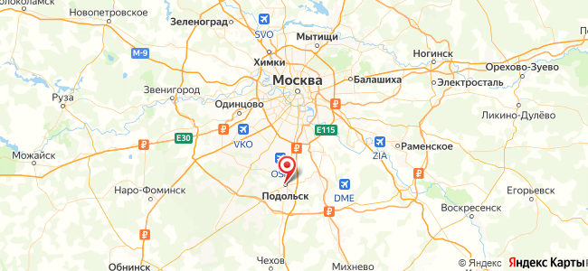

Что делает замерщик
- Снимает размеры проёма, высоту столбов, уровень грунта
- Проверяет столбы и основание под монтаж
- Показывает образцы покрытий и элементов
- Считает предварительную смету на месте
Можно заказать изделие по своим размерам или купить готовые изделия и элементы со склада.
Изготовим ворота, забор, перила или козырёк по вашим размерам. Перед началом работ согласуем эскиз, стоимость, сроки, доставку и монтаж.
Порядок заказа ↓Выберите товары в каталоге, укажите артикулы и количество. Мы подтвердим наличие и стоимость заказа, согласуем самовывоз или доставку.
Порядок покупки ↓Изделия на заказ
Средний срок для ворот и заборов — 20 рабочих дней после замера. Перила и козырьки быстрее, лестницы и навесы дольше.
Форма, звонок или фото в WhatsApp. Менеджер уточняет размеры, называет ориентир цены и записывает на замер.
ответ за 15 минутВыезд по Москве и области, размеры, уровень, столбы, образцы покрытий, фото похожих работ.
1–2 дня, бесплатно при заказеЭскиз под ваш проём, до 3 правок. Договор с ценой, сроком, спецификацией. Аванс 50%.
2–4 дняСборка из элементов, сварка, зачистка, грунт, порошковая покраска или патина. Фото из цеха перед покраской.
10–15 рабочих днейСвоим транспортом по Москве и МО в день монтажа. В регионы через ТК, упаковка бесплатно.
1 деньСвоя бригада, столбы, петли, замок, автоматика. Акт, паспорт изделия, гарантия 5 лет, доплата после установки.
1–2 дняГотовые изделия и элементы
1 300+ позиций в 22 разделах. Наличие уточняем при подтверждении. Прайс в Excel для мастерских.
корзина или письмо с артикуламиВ корзине без регистрации или через личный кабинет: история заказов, повтор заказа, документы.
подтверждение за 15 минутКартой онлайн, наличными или картой на складе, по счёту для юрлиц. Скидка 5% от 10 000 ₽, 10% от 45 000 ₽.
в день заказаСамовывоз в Подольске в день оплаты, доставка по Москве и МО, отправка ПЭК, Деловые Линии, СДЭК по России.
1–7 днейЗамер
Если объект далеко или замер не нужен (перила по готовым ступеням, козырёк по фото), считаем по вашим размерам и фото, а точный замер делает монтажник перед установкой.

Москва и Московская область: Подольск, Домодедово, Чехов, Климовск, Щербинка, Видное, Новая Москва, Серпухов, Ступино и другие
Выезд в течение 1–2 дней, ежедневноДоставка
Со склада в Подольске, пос. Сельхозтехника, ул. Промзона, 1а. Ежедневно 9:00–21:00. Элементы в день оплаты, изделия по готовности.
Изделия на заказ привозим в день монтажа. Элементы доставляем на следующий день после оплаты.
ПЭК, Деловые Линии, СДЭК (отправка по понедельникам, средам и пятницам). Проверьте, что филиал ТК есть в вашем городе.
Монтаж
Два монтажника со своим транспортом и инструментом. Столбы, фундамент, навеска, регулировка, автоматика. После работы убираем мусор и подписываем акт.
Монтаж выполняем по Москве и Московской области. В другие регионы отправляем изделия ТК с инструкцией по установке; выезд бригады обсуждаем отдельно.
Условия заказа
Вопросы по условиям
Договор с эскизом и спецификацией, чек или счёт, акт выполненных работ после монтажа, паспорт изделия с условиями гарантии и памяткой по уходу. Юрлицам: счёт, УПД.
Да. Считаем по вашим размерам и фото, изготавливаем и отправляем ТК с инструкцией по установке. Выезд замерщика и монтажной бригады в другие регионы обсуждаем отдельно.
Срок прописан в договоре. За каждый день просрочки по нашей вине скидка 0,5% от стоимости заказа. На практике ворота и заборы сдаём в 20 рабочих дней.
Размеры проёма или длина забора, фото места, пожелания по рисунку (фото из интернета подойдёт). Остальное уточнит замерщик.
Да: по вашим чертежам, с образцами в студию, договор и закрывающие документы, серийное изготовление секций. Условия сотрудничества обсуждаем индивидуально. Подробнее для дизайнеров и архитекторов →
Замер на объекте
Замерщик приедет в течение 1–2 дней, снимет размеры, покажет образцы и назовёт цену. Бесплатно при заказе.